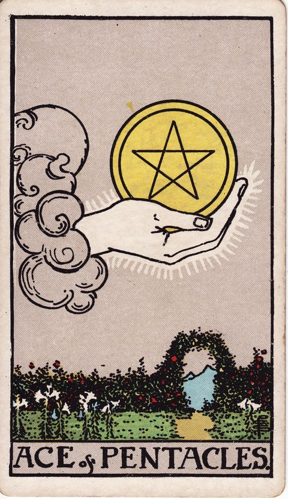

PENTACLES · 地
ペンタクルのエースの意味
Ace of Pentacles

- 分類ペンタクル
- 象徴地／ペンタクル（仕事・お金・現実）／数字1（始まり）
- 正位置新しい機会・始める準備・役立つもの
- 逆位置機会を逃す・準備不足・お金の見通し
暮らしや学びに役立つ、小さな機会のカードです。
SYMBOLS
描かれている象徴
雲から出た手が、大きな金貨を持っています。下には花の咲く庭と、道があります。金貨はお金だけでなく、時間や道具など、形のある支えも表しています。
UPRIGHT
正位置の意味
- 新しい機会
- 始める準備
- 役立つもの
始められそうな話や使える道具がないか、確かめてみましょう。必要な時間や費用を考えると、実際の一歩にしやすくなります。
進めやすさ5 / 5（追い風が強い）
- 気づいていないこと
- 使える道具や、新しい機会はありますか。
- 気をつけたいこと
- 始める前に、必要な費用や時間を確かめましょう。
- 本当はどうしたい？
- 少しずつ形にしたいことは何ですか。
- やめてもよい考え
- 大きな機会が来るまで、待たなくても大丈夫です。
- 選ぶときのヒント
- 今の自分が準備して始められる方はどちらですか。
REVERSED
逆位置の意味
- 機会を逃す
- 準備不足
- お金の見通し
よさそうな話でも、必要なお金や時間を確かめてみましょう。始めたあとも続けられるかを考えることが大切です。
進めやすさ2 / 5（いまは整える・見直すが先）
- 気づいていないこと
- よさそうな話の、条件を確かめましたか。
- 気をつけたいこと
- 使えるお金や時間を超えて、約束しないようにしましょう。
- 本当はどうしたい？
- 実際に始めたいのは、どんなことですか。
- やめてもよい考え
- 機会を1つ逃しても、全部が終わりではありません。
- 選ぶときのヒント
- 無理のない準備で続けられる方はどちらですか。
FOR YOUR DECISION
決断・迷いにおけるヒント
決断の場面での読み方
ペンタクルのエースは、雲から伸びる手が大きな金貨を差し出し、その下に庭園が広がる場面です。目に見える形で実を結ぶ機会の種を表します。
決断の場面では、具体的に手で触れられるチャンスかどうかを判断材料にしてください。収入、スキル、住まいなど、現実の暮らしに根を張る選択は、時間をかけるほど育ちます。
庭のアーチの先に山が見えるように、すぐの成果より、長く育てていける見通しがあるかを確かめましょう。
よくある迷いとの向き合い方
新しい仕事のオファーや投資、学びの機会を受けるか迷うとき、このカードは堅実な始まりを後押しします。逆位置なら、機会を逃す不安や浪費の傾向に注意を。
今受け取れる種を一つに絞り、確実に植えることから始めると、実りにつながります。
決断前に自分に問いかけたいこと
そのチャンスは、具体的に手で触れられるものか。時間をかけて育てていける見通しはあるか。今受け取れる種を一つに絞れるか。収入やスキルなど、暮らしの土台にどうつながるか。
「進めやすさ」は、その選択肢を「いま進める」ときの追い風の強さ。運勢の良し悪しではない。
RELATED CARDS
関連するカード

正位置の進めやすさが同じ（5 / 5）カード


このカードの視点で考えたい悩み
いまの迷いに近いテーマから、考え方と自分への問いかけを探せます。